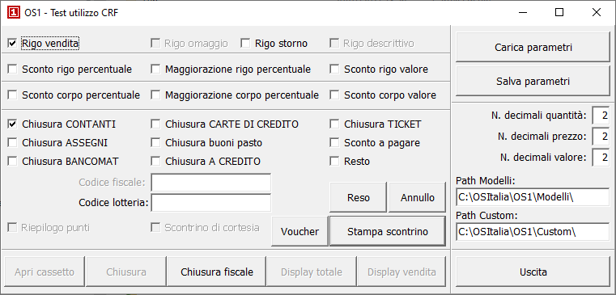

Per poter agevolmente testare un modello interfaccia si può utilizzare questa applicazione:

La procedura consente, previa definizione dei percorsi relativi a Modelli e Custom di OS1, di simulare le varie funzionalità di uno scontrino; le varie funzionalità saranno attive o meno a seconda di quanto previsto nei file di configurazione; è possibile salvare i parametri impostati su di un file tramite il tasto 'Salva parametri' e richiamarli tramite il tasto 'Carica parametri' in modo da poter configurare dei test fissi da ripetere su più CRF o più volte nel tempo.